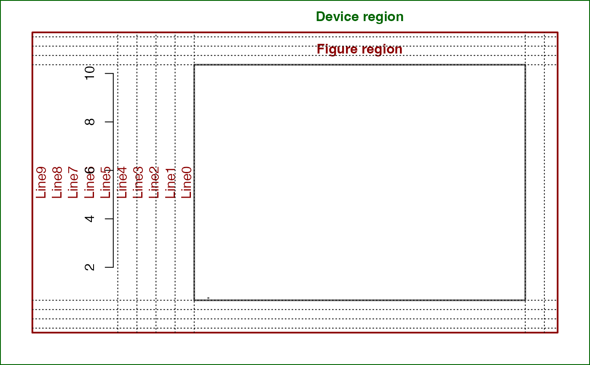
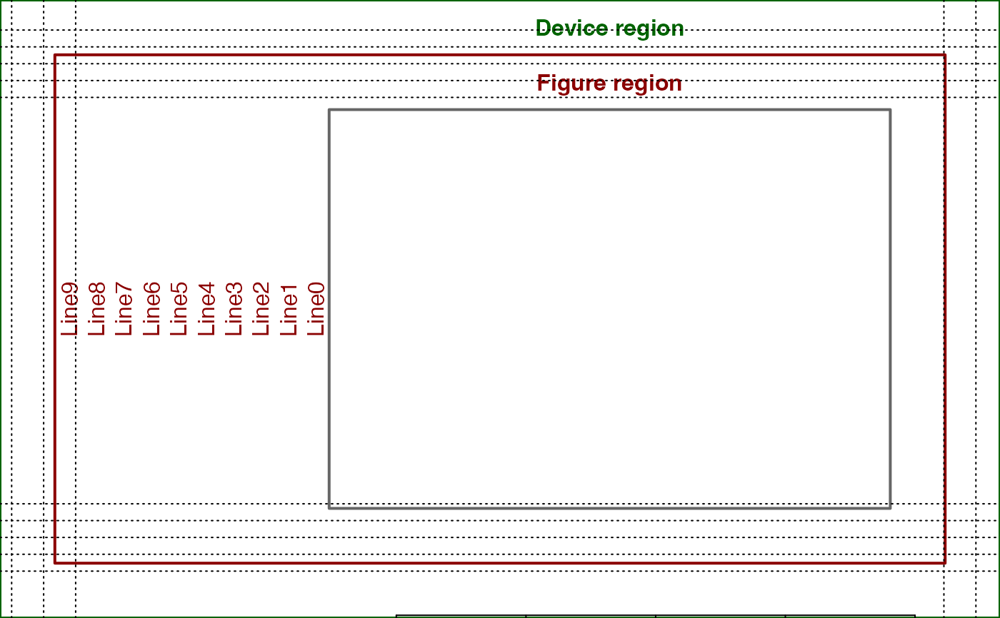
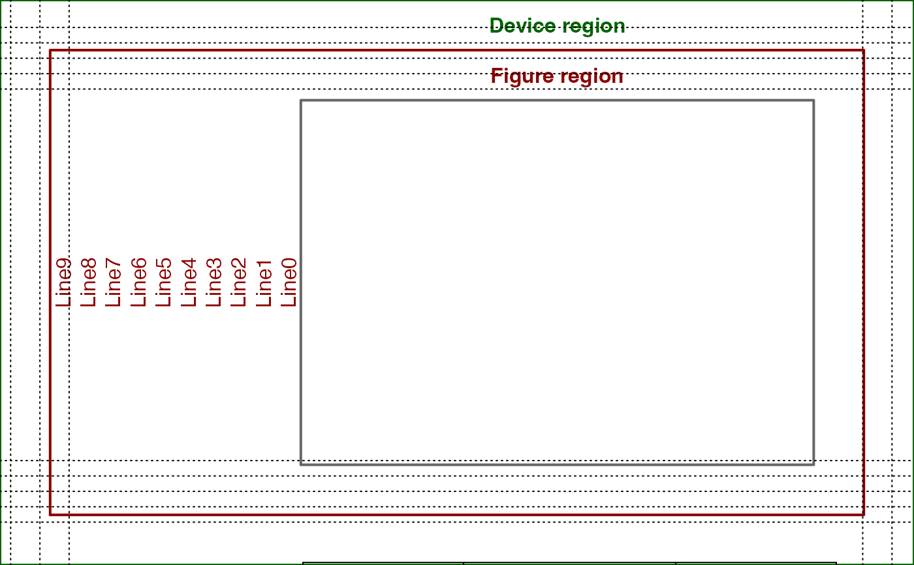

Here's a version that works with log-scale and linear scale axes. The trick is to express line locations in npc coordinates rather than user coordinates, since the latter are of course not linear when axes are on log scales.
Value
a numeric vector of the same length as line;
the values represent the coordinates in the current plot
and are converted from line.
Details
par('cin')[2] * par('cex') * par('lheight') returns the current line height
in inches, which we convert to user coordinates by multiplying by
diff(grconvertX(0:1, 'inches', 'user')), the length of an inch in user
coordinates (horizontally, in this case - if interested in the vertical
height of a line in user coords we would use
diff(grconvertY(0:1, 'inches', 'user'))).
References
https://stackoverflow.com/questions/29125019/get-margin-line-locations-mgp-in-user-coordinates
Examples
setup_plot <- function(log = "") {
oldpar <- par(mar = c(2, 10, 2, 2), oma = rep(2, 4))
plot.new()
plot.window(xlim = c(1, 10), ylim = c(1, 10), log = log)
box(which = "plot", lwd = 2, col = "gray40")
box(which = "figure", lwd = 2, col = "darkred")
box(which = "outer", lwd = 2, col = "darkgreen")
text(x = 0.5, y = 0.5,
labels = "Plot Region",
col = "gray40", font = 2)
mtext(side = 3, text = "Figure region", line = 0.5, col = "darkred", font = 2)
mtext(side = 3, text = "Device region", line = 2.5, col = "darkgreen", font = 2)
for (i in 0:9) {
mtext(side = 2, col = "darkred", text = paste0("Line", i), line = i)
}
par(oldpar)
}
# And here are a couple of examples, applied to your setup_plot with mar=c(5, 5, 5, 5):
setup_plot()
axis(1, line=5)
axis(2, line=5)
abline(h=line2user(0:4, 1), lty=3, xpd=TRUE)
abline(v=line2user(0:4, 2), lty=3, xpd=TRUE)
abline(h=line2user(0:4, 3), lty=3, xpd=TRUE)
abline(v=line2user(0:4, 4), lty=3, xpd=TRUE)

setup_plot(log='x')
axis(1, line=5)
axis(2, line=5)
abline(h=line2user(0:4, 1), lty=3, xpd=TRUE)
abline(v=line2user(0:4, 2), lty=3, xpd=TRUE)
abline(h=line2user(0:4, 3), lty=3, xpd=TRUE)
abline(v=line2user(0:4, 4), lty=3, xpd=TRUE)
setup_plot(log='y')
axis(1, line=5)
axis(2, line=5)
abline(h=line2user(0:4, 1), lty=3, xpd=TRUE)
abline(v=line2user(0:4, 2), lty=3, xpd=TRUE)
abline(h=line2user(0:4, 3), lty=3, xpd=TRUE)
abline(v=line2user(0:4, 4), lty=3, xpd=TRUE)

setup_plot(log='xy')
axis(1, line=5)
axis(2, line=5)
abline(h=line2user(0:4, 1), lty=3, xpd=TRUE)
abline(v=line2user(0:4, 2), lty=3, xpd=TRUE)
abline(h=line2user(0:4, 3), lty=3, xpd=TRUE)
abline(v=line2user(0:4, 4), lty=3, xpd=TRUE)
